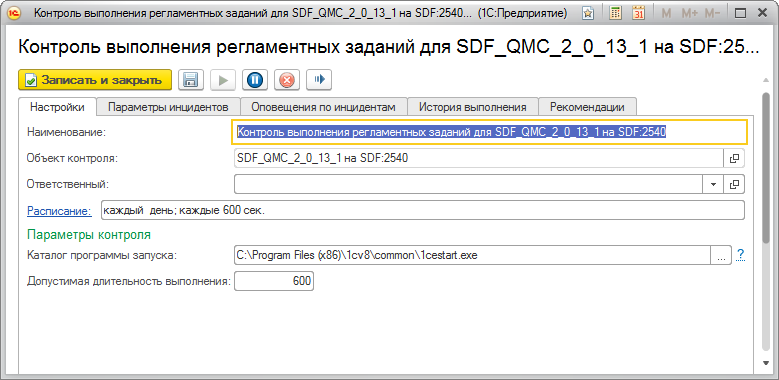
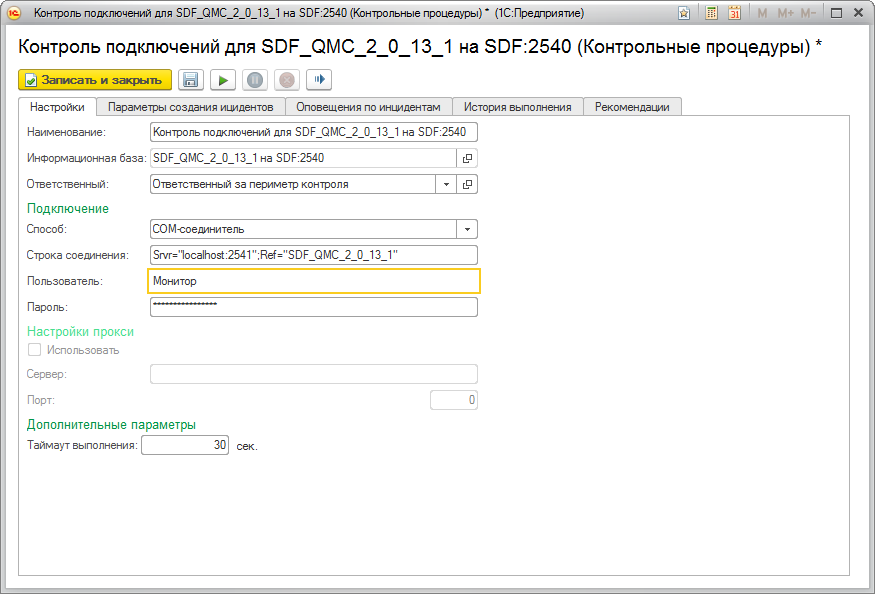
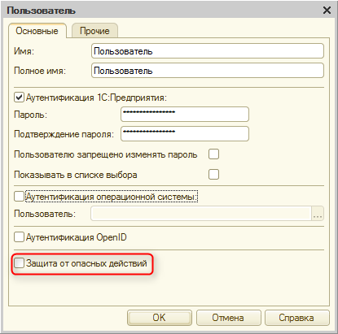
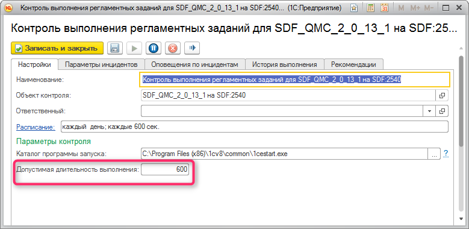

Контрольная процедура "Контроль выполнения регламентных заданий" позволяет оперативно обнаруживать проблемы при выполнении регламентных заданий в информационных базах.
При работе контрольной процедуры программа считывает данные из журнала регистрации информационной базы.
Используя полученные данные, программа находит регламентные задания, которые завершились с ошибкой или не завершились в установленный срок
Для работы контрольной процедуры необходимо верно указать каталог программы запуска 1cestart.exe.

Параметры подключения к информационной базе для выгрузки журнала регистрации автоматически подгружаются из настроек контрольной процедуры "Контроль подключений" текущего объекта контроля.

Выгрузка журнала регистрации выполняется с помощью внешней обработки, поэтому пользователь, указанный в настройках контроля подключений должен обладать правами на запуск внешних обработок в контролируемой информационной базе. Так же необходимо отключить механизм защиты от опасных действий для данного пользователя в той информационной базе для которой выполняется контроль выполнений регламентных заданий.

Также необходимо указать максимально допустимую длительность выполнения регламентного задания для данной информационной базы. ЦКК будет оповещать о всех регламентных заданиях, выполняющихся дольше, чем указанное значение.
